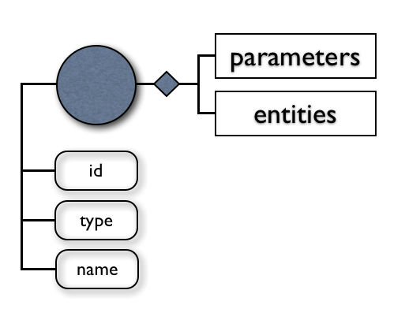
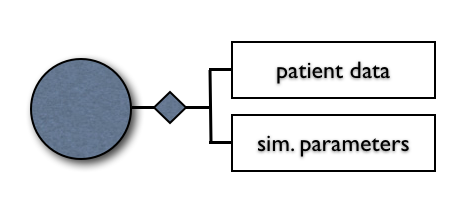

Documentation
The ARCH Network Editor (archNE) aims at providing a GUI for the usage of pyNS and it has been developed by Orobix in the context of EC FP7/2007-2013: ARCH, Project n. 224390.
archNE uses the cross-platform user interface framework Qt and its architecture is based on the Model-View-Controller paradigm in order to allow an easy object-oriented programming (OOP). The OOP nature of the system allows it to be adapted to other 0D-1D solvers by simply changing one class of its: the IO class governing the exchange of data with the external solver.
Background
The python Network Solver (pyNS), is a software developed in Python with numpy package, needed for scientific computing with Python, with the aim to simulate hemodynamic behavior in vascular networks. pyNS is developed in the Department of Bioengineering, at Mario Negri Institute (MNI) with support from the EC FP7/2007-2013: ARCH, Project n. 224390.
In the contest of the Arch Project, the aim of the application is to simulate hemodynamic changes induced by AVF surgery and long-term vascular and cardiac adaptation and to predict AVF function for improvement of surgical planning and AVF management. Verification of model prediction of AVF maturation, patency, onset of steal syndrome and cardiac overload will be performed on the basis of prospective observational studies in HD patients.
Product Perspective
The XML schema of the vascular network has been created by using named types. We chose to use element to express information in a structured form (if an element id directly derived from an other or to take into account the possibility of extending an element content to carry more information); otherwise, to provide additional information about an element, we use one or more attributes. We described the Vascular Network as a graph, composed by case, nodes, edges and superedges. These elements allow defining the network topology. The first element declared (root element) is called Network Graph. Case, nodes, edges and superedges are the leaf elements; each of this is identified with a unique ID. The parameters involved in the model are given with information about unit, accuracy and source of measurement.
Case element provides some general information about the dataset (subject Id and protocol visit).
Superedges element, identified by an integer id and a name, represents a group of edges or a group of other superedges. For example, superedge arm can be composed by brachial artery, radial artery... superedges. Each of them is a group of edges. Superedge can be very useful when user has to assign the same parameter (or boundary condition) to many edges of the network.
Each node of the vascular network is identified by an unique
id and can be classified with a
type attribute and with a
name. User can specify some properties related to each node, depending of its classification. For example, if a node is classified as
anastomosis, properties are related to resistance expressions to model the pressure drop over this element. A node can be classified as
anastomosis,
bifurcation,
inflow,
outflow or
downstream network.
Each edge of the vascular network is identified by an unique
id, a
couple of nodes, a
name and a
side attributes which represents if edge is belonging to arterial or venous side. User can decide to specify the type of the elements generated from this edge during the
mesh generation process. Each edge is composed by geometry, properties and features elements. Geometry is used for specifying characteristics such as the
length of the edge or for providing its xyz
spatial coordinates. An edge can have one or more properties related to its radius, distensibility, wall thickness, young's modulus, specific resistance and specific compliance. If specific information are available each property can be expressed as an array of values in several locations; each value is identified by a curvilinear abscissa
s, which can assume values from 0 to 1.
It is possible to have physiological or pathological
features (e.g., kink, stenosis, other...). Each of these conditions is identified by a curvilinear abscissa
s and by a parameter of interest (e.g., radius and curvature for kink, radius and length for stenosis).

The boundary conditions model is described as a graph, composed by different types of boundary conditions. Each boundary condition is identified by an integer id, a type and a name. Each type of boundary condition is specified with its own characteristically parameters and entities associated to it. Each entity represents a group of meshes with the same type of boundary condition and is identified with a unique id which is related to vascular network superedge's name and, if needed, also with a node id related to vascular network nodes.
Characteristically parameters can be related to prescribed external pressures (e.g. element's transmural pressures), inflow's parameters or outflow prescribed pressures. Transmural pressure can be expressed with scalar value or in an array form. If expressed in array form, transmural pressure is time-related; so each pressure is associated with its specific time value.

Simulation parameters and patient data provide additional information for patient-specific simulation.
Simulation parameters graph is composed by a list of variables and each of them is expressed with a scalar value. By default, blood density (1050 kg/m3), poisson ratio (0.5), timestep (0.001 s) and total number of simulation cycles (10) are defined.
Patient data graph contains a sequence of patient personal data. Each element can be expressed by a scalar value or with an expression which will be evaluated by pyNS. User can provide patient-specific information about date of birth, date of surgery, age, gender, arm (left or right), fistula type, height (cm) and weight (kg), systolic and diastolic pressures (mmHg), mean value of cardiac output (mL/min), cardiac period (s), information about brachial, radial and ulnar mean flows (mL/min) from US measurements, blood analysis data (plasma protein concentration (cp, g/dL) and hematocrit (ht, %)), blood viscosity (Pa*s) and information about pathological problems such as diabetes (yes/no) and hypertension (yes/no).
pyNS allows to generate a patient-specific network from some default generic templates, giving user the possibility to specify only some basic patient information. Vascular network geometry and properties, boundary conditions and simulation parameters are computed according to generic rules defined as expressions in generic templates xml files.
This process can be executed either by archNE customization or pyNS. To run customization from pyNS user has to pass a .csv file with a list of parameters and their values to ModelAdaptor class.
The primary functional responsibility of this class is to calculate parameters from expressions (using evaluator class) and to write the new vascular network xml file.
A short how-to for building a patient-specific .csv file can be found in the pyNS how-to section.
This class evaluates xml equations using regular expressions.
Evaluator class is structured for evaluating equations related to both edges of the vascular network graph and mesh elements. Moreover, an effective caching strategy was developed to save overall computational time.
A short how-to for building a xml equations using regular expressions can be found in the regular expression for xml equations section.
Elements module is a collection of different kind of elements. Each element of the network has common characteristics, although they can be very different from each other.
The element defined in the Elements class represents a general element and each specific element must be referred to it. This class provides methods for building its zero order matrix, first order matrix and second order matrix; this is a general strategy adopted for all kind of elements.
Each kind of element represents a mathematical model which is implemented for the scope of modeling and studying pressure, volumetric flow rate and wall-shear stress distribution over the complete vascular system or a specific part of it.
A short how-to for implementing a new element into pyNS can be found in the pyNS example section.
This element has been implemented with a 0D pulse wave propagation model (5 degrees of freedom) as illustrated in Huberts W. et al., A pulse wave propagation model to support decision-making in vascular access planning in the clinic. Med Eng and Physics, (2011).
The relations between pressure and volumetric flow rate for each vascular segment are derived from conservation of mass and momentum by assuming fully-developed incompressible Newtonian volumetric flow rate in a straight vessel. In the momentum equation the convection term, the axial diffusion term and the effect of body forces are neglected. The lumped parameter model obtained consists of a resistor per unit length R (representing the resistance to volumetric flow rate through the vessel) and an inductor per unit length L (representing the inertia of the blood) in series. Both R and L also depend on Womersley number.
To incorporate the storage capacity of the vessel in the model, a capacitor C is added to each side of the vascular segment, representing half of the total vascular compliance over that segment. It is assumed that the artery is a thick-walled linear elastic tube.
Veins diameter(D) and compliance(C) are defined as functions of pressure p in which D0 is the diameter of the vein measured in correspondence of the mean pressure[Pa].
The leakage RL is captured by adding linear resistances (representing resistance to volumetric flow rate through small side-branches) in parallel to the capacitors. In addition, extravascular pressures Pe are prescribed as a boundary condition parameter. The total resistance, total inertance and total compliance are obtained by integrating R, L and C over the segment length.
This element is a very simple 0D model realized with a resistance, which can be linear or not, between two nodes.
Resistor R can be implemented as a variable resistance and its law will be described in the vascular network xml file according to the regular expression structure for pyNS. User can decide to mesh each edge with this model simply assigning to the edge's type attribute the value "Resistance".
This element is a 0D model realized with 2 resistor between 3 nodes.
Anastomosis cannot be modeled by linear segments because the radial velocity component is no longer infinitesimally small compared to the axial velocity and flow separation can occur in this region. The velocity profile can thus not be based on fully developed flow in straight vessels. Consequently, a special element named Anastomosis, used as connection between an artery and a vein, is created to model the pressure losses over it.
In order to evaluate the non-linear resistance associated to each anastomosis configuration, the pressure drop across the computational domain must be accurately evaluated by means of CFD computations. We model blood as a Newtonian fluid with constant properties so that the flow across the anastomosis is approximated numerically solving the incompressible Navier-Stokes equations. The simulations are performed with the opensource hemodynamics solver Gnuid while vmtk has been used for the generation of the vessels surfaces defining the anastomosis model.

The Gnuid solver is based on a fully implicit implementation of the well known Pressure-Correction scheme introduced by Guermond and Quartapelle (Guermond JL et al., On stability and convergence of projection methods based on pressure poisson equation. Int. J. Num. Meth. Fluids, 26:1039-1053 (1998).) and used a discontinuous approximation for the velocity unknown and a continuous approximation for the pressure. The ability to combine a discontinuous Galerkin (dG) and a continuous Galerkin (cG) discretization in a dG-cG velocity-pressure space couple provides some interesting properties. It yields inherently inf-sup stable equal-order velocity-pressure discretizations, the better behaviour of discontinuous approximations in convection-dominated regimes is exploited in the advection-diffusion step and the cG formulation limits the cost of the Laplacian operator associated to the projection step.

To ensure stability at high-Reynolds numbers and reduce the amount of artificial diffusion, the convective term is discretized following Di Pietro and Ern (D. A. Di Pietro et al., Discrete functional analysis tools for discontinuous Galerkin methods with application to the incompressible Navier-Stokes equations. Math. Comp. 79, 1303-1330 (2010).), where a non-dissipative formulation has been proposed.
The discretization has been validated against a large set of classical two- and three-dimensional tests covering a wide range of Reynolds numbers and has proved effective for the simulation of convection-dominated flows both from the accuracy and the computational cost viewpoints (L. Botti et al., A pressure-correction scheme for convection-dominated incompressible flows with discontinuous velocity and continuous pressure. J. Comput. Phys., 230 (2011).).
This element has been implemented with a 0D three-element Windkessel model, as illustrated in Westerhof N. et al., An artificial arterial system for pumping hearts. J. Appl Phys (1971)., consisting of a characteristic impedance, Zwk, a resistance, Rwk and a compliance, Cwk. The characteristic impedance is chosen such that the reflections from high frequencies are attenuated. Standard reference pressure Pv and extravascular pressure Pe are prescribed as boundary condition parameters. Total resistance Rp (Zwk+Rwk) is defined as P/(k*Q) with k the fraction of the cardiac output flowing though the peripheral bed, p the mean arterial pressure and q the cardiac output. The pressure wave decreases during diastole with a time constant, that is equal to Rwk*Cwk, which can be obtained from the descending slope of the local pressure curve during diastole or can be estimated based on literature.
The mesh generation process is handled by Mesh Generator class which provides two different type of meshing strategies. The first method, called maxLenghtMeshing, creates meshes from edges taking into account the maximum length parameter decided by the user. Default value is 5 cm. If edge's length is greater than the maximum length parameter, mesh generator creates a number of meshes, each of them with the same length, corresponding to the integer value of the ratio between edge's length and maximum length parameter.
The second method, called toleranceMeshing, creates meshes from edges taking into account the radius tolerance parameter decided by the user. Default value is 33%. If edge's radius along the curvilinear abscissa increases more than tolerance, a new mesh is created.
During mesh generation process pyNS creates entities from superedges and builds the corresponding network Mesh object from its network Graph. This class can write vascular network mesh in a specific xml file which can be imported into archNE.
Each element of the network builds three local matrices by applying an analogue of Kirchoff’s current law to satisfy element-to-element mass conservation: a zero order matrix(M0), a first order matrix(M1) and a second order matrix(M2) containing reciprocal in- ertances, reciprocal resistances and compliances respectively. Each one is a square matrix of order corresponding to the total number of element’s degrees of freedom in which qe is a column vector containing nonzero values at the nodes where the flow is prescribed, pe is a column vector containing the global node pressure values.
A class, named dofmap, maps each local degree of freedom into a global degree of freedom, handling connectivity between elements of the network. Dofmap is used by Assembler class to assembling global matrix from element's local matrices.
Solver class provides methods for solving the set of differential equations obtained by applying an analogue of Kirchoff's current law to satisfy element-to-element mass conservation.
The time derivative and time integral in the set of the differential equations are approximated by using an implicit trapezium rule with initial conditions (q0=0 and p0=0). The final scheme is shown in the figures.
To solve, an iterative procedure is used. User can set timestep value and the total number of simulation cycles into simulation parameters file.
Assembler class, using local to global map of degrees of freedom (dofmap) provided by dofmap class, builds three global matrices MG (zero, first and second order) joining into one square matrix of order corresponding to the number of global degrees of freedom all local matrices Mel of the same type.
Moreover assembler class stores a copy of linear global matrices built excluding local matrices of non linear elements, for improving performances during non linear simulations. This architecture permits to avoid the complete reassembling of global matrices in case of non linearities and to stay focused only on a section of global matrices corresponding to the non linearity.
A non-linear convergence strategy has been implemented for solving system with non-linear characteristics. Solver class introduces an inertia relax coefficient (0.9) for improving convergence performances. Solution is thus considered as the sum between the 90% of the current solution and the 10% of the solution at the previous non-linear incremental step (pi). If the non linear error(nlerr), described as the ratio between the infinite norm of p − pi and the infinite norm of pi, is larger than a predefined convergence tolerance nltol, the next non-linear incremental step is executed.
Before executing the next non-linear incremental step pyNS has to evaluate non-linear elements and updating the system matrix. Assembler class stores a copy of linear global matrices built excluding local matrices of non linear elements, for improving performances during non linear simulations. This architecture permits to avoid the complete reassembling of global matrices in case of non linearities and to stay focused only on a section of global matrices corresponding to the non linearity.
Network Solution class elaborates results for post-processing providing a family of methods related to volumetric flow rate, reynolds number, vascular pressure, wall shear stress and pulse wave velocity. pyNS is able to provide information for each global degree of freedom of the vascular network. Moreover, this class allows to write hemodynamic information in a specific xml file which can be imported in archNE.
Thanks to Matplotlib library, a python 2D plotting library which produces publication quality figures in a variety of hardcopy formats and interactive environments across platforms, this class can elaborate solutions in a graphical form.
A short how-to for handling graphical features of post processing class can be found in the pyNS how-to section.
Network Solution class provides methods for writing volumetric flow rate, reynolds number, pressure, wall shear stress and pulse wave velocity time-signals for each mesh in specific text files.
A short how-to for handling basic features of post processing class can be found in the pyNS how-to section.
The Inverse Womersley class implements the method described in Cezeaux J.L. et al., Accuracy of the inverse Womersley method for the calculation of hemodynamic variables. Annals of biomedical engineering, 25:536-546 (1997) for the accurate determination of wall shear stress.
The fluid mechanics of the arterial system can have a direct effect on the physiology of the blood vessel wall. The accurate determination of arterial wall shear stress, however, is problematic. Calculations of wall shear stress from measured velocity profiles remain inaccurate due to the failure of these methods to resolve the velocity in the thin shear layer near the arterial wall. This difficulty has led investigators to the calculation of wall shear stress from other hemodynamic variables that can be more accurately and easily measured. One such calculation involves the inverse Womersley method that uses either the volumetric flow rate or centerline velocity to determine the wall shear stress.
This module allows to plot velocity profiles into image files (.png format) and makes a movie (.avi format) from images set. The related movie represents the blood velocity profile during a cardiac cycle along the fractional radius of the selected vessel. MEncoder, a free command line video decoding, encoding and filtering tool released under the GNU General Public License, is required for using this feature.
In this section is shortly explained how to setup and run a simulation using pyNS. In this figure is displayed a list of some command line arguments allowed for the Main.py file. Running Main.py -h or Main.py --help a brief explanation of implemented command line arguments is displayed.
User has first to choice between a generic template network or a specific network.
In case of generic template simulation, user has now the possibility to specify additional patient-specific geometry data (length and radius of vessels) and parameters (gender, date of birth, date of simulation, height, weight, systolic and diastolic pressures, cardiac period, hematocrit, protein plasma concentration...) using two different csv files (comma separated value). Some parameters has to be expressed in a standardized way: gender can be 0 (female) or 1 (male); arm can be 0 (left) or 1 (right ); ftype parameter, representing the fistula type, can be 0 (lower radio-cephalic end-to-end), 1 (lower radio-cephalic end-to-side), 2 (lower radio-cephalic side-to-side), 3 (upper brachio-cephalic end-to-side), 4 (upper brachio-cephalic side-to-side), 5 (upper brachio-basilic end-to-side), 6 (upper brachio-basilic side-to-side) or 7 (Pre-surgery, no fistula); hyp (hypertension pathology) and diab (diabetes) can be 0 (not present) or 1 (present).
User can choose from two different types of meshing, MaxLenghtMeshing and ToleranceMeshing. MaxLenghtMeshing simply checks vessel edge's length and if it's greater than a user-defined length, a new mesh is created. (Default value is 5 centimeters). ToleranceMeshing checks vessel edge's radius variation along curvilinear abscissa. If radius increases more than a tolerance value (%), a new mesh is created. (Default value is 33%).
Example:
meshGenerator.SetMaxLength(5.0e-2) or meshGenerator.SetTolerance(33)
User can choose a textual and/or graphical representation of solutions. pyNS provides information about pressures, volumetric flow rates, reynolds numbers, pulse wave velocities and wall shear stresses along all network.
General information
PlotBrachial, PlotRadial and PlotCephalic methods plot pressure, flow and wall shear stress signals into the same picture for a quickly view. WriteToXML method writes xml vascular output file which provides information about solutions in vascular network format. GetSolution method takes as input a superedge and plots pressure, flow and wall shear stress signals into the same picture for a quickly view. PulseWaveVelocity method takes as input one or two superedges and plot pulse wave velocity signal.
Specific volumetric flow rate information
GetInflow method plots inflow cardiac function specified in boundary conditions XML file. PlotFlow method takes as input a single mesh and plots mean flow signal over it. PlotFlowComparative method plots brachial, radial and ulnar flow signals into the same picture for a quickly view. WriteFlowOutput method takes as input a single mesh and writes in a txt file flow signal over it. Additional methods related to Reynolds number computation have been implemented taking as input a single mesh and plottin reynolds number values over it.
Specific pressure information
PlotPressure method takes as input a single mesh and plots mean pressure signal over it. PlotPressureTwo method takes as input a couple of mesh and plots mean pressure signals over them into the same picture for a quickly comparison. PlotPressureComparative method plots brachial, radial and ulnar pressure signals into the same picture for a quickly view. PlotPressureDrop method takes as input a single mesh and plots pressure drop signal over it. WritePressureInput and WritePressureOutput methods take as input a single mesh and write in a txt file pressure signal (respectively input or output) over it.
Specific wall shear stress information
PlotPWSS method takes as input a single mesh and plots Poiseuille wall shear stress signal over it. PlotPWSSComparative method plots brachial, radial and ulnar Poiseuille wall shear stress signals into the same picture for a quickly view. PlotWSS takes as input a single mesh and plots Womersley wall shear stress signal over it. WriteWSSOutput method takes as input a single mesh and writes in a txt file Womersley wall shear stress signal over it.
Other information
pyNS provides information about Reynolds number, pulse wave velocity and velocity profile over the fractional radius.
WriteReynolds method takes as input a single mesh and writes reynolds number signal in a txt file while PlotReynolds plots the signal.
PulseWaveVelocity method takes as input one or two superedges and computes the pulse wave velocity(m/s) along a superedge or from the first to the last superedge.
ShowVelocityProfile takes as input a single mesh and show a movie(.avi) with the velocity profile over the fractional radius while SaveVelocityProfile saves the movie in a subfolder.
pyNS has been designed with an object-oriented approach, which allows to abstracts the concept of element from the numerical solver itself. This approach makes it very easy to add a new element into pyNS.
First Step: creating the new element class. In this example we will implement a new element representing a low-pass filter, called "LowPassFilterElement". This element is composed by a resistor in series with a load and a capacitor in parallel with the load. Constructor method has to define common element characteristics such as id, its nodes, its name, local degrees of freedom and element parameters. Parameters can be described by a scalar value or with an equation, thus making the element non-linear. InputParameters method, after calling method from the superclass, has to check if its parameters are expressed with an equation or not. If any parameter is in a non-linear form, inputParameters method has to call evaluator class for evaluating the equation.
Don't forget to define Set methods for resistance and compliance parameters.
Last but not least, we have to define a method called GetCircuitMatrix for building electrical circuit design,a method for setting prescibed pressures and a set of methods for managing local degrees of freedom and element's nodes. Each row of the circuit matrix is an edge and each column is a variable (Node1, Node2, R, C, L). The prescribed pressure is located after the capacitor, and a method called GetExternalPressureLocalDofs has to set prescribed pressure in the correct local degree of freedom.
The complete code for this example is available here.
Second Step: add the register Element statement to support this new element. Element class has to create LowPassFilterElement if edge meshType variable is specified as LowPass Filter. Add this line at the end of the LowPassFilterElement class, as shown in the picture.
RegisterElementType("LowPassFilter",LowPassFilterElement)
An element is non-linear if at least one of its parameters is expressed with a regex equation. Element class sets nonLinear variable to True if a non-linear parameter is present. User has to define into inputParameters method possibility to specify parameters both with a linear and a non-linear way. For example:
if type(self.Resistance) is not str: self.R = self.Resistance
else: evaluator.evaluate(self.Resistance)
User has to define also a method for setting the non-linear parameter. Evaluator class will call this method for setting value into element after evaluating the expression. For example:
def SetResistance(self, resistance, info=none):
self.R = resistance
In computing, a regular expression, also referred to as regex or regexp, provides a concise and flexible means for matching strings of text, such as particular characters, words, or patterns of characters. A regular expression is written in a formal language that can be interpreted by a regular expression processor (pyNS uses the Evaluator class), a program that either serves as a parser generator or examines text and identifies parts that match the provided specification.
Syntax
Any xml equation has to be expressed with this structure: a property of an edge or an element = mathematical expression.
For specifying an element: the edge name, which the element is belonging to, has to be enclosed in square brackets. Additional information about curvilinear abscissa (the position of the element inside its edge) can be provided, otherwise default value is 0.0. This type of expressions is evaluated everytime the element is initialized.
For specifying an edge: its name has to be enclosed in curly brackets. Additional information about curvilinear abscissa (which permits to assign the computed value in the exact location along the edge) can be provided, otherwise default value is 0.0. This type of expressions is evaluated only during model adaptor phase and it's used for a patient-specific adaption from a generic template.
Every variable has to be expressed with a prefix tag, $ and has to be assigned to an edge or an element. If variable refers to a costant parameter defined in the boundary conditions xml file, variable has to be followed by empty square brackets.
Any xml equation must be included in xml file between xml expression tag.
Building a regex equation for model adaptor
The structure for building an xml equation for model adaptor is very simple.
<length unit="m" accuracy="10%" source="US">
<expression>$Length{radial_prox} = (0.09855*$height[])*1e-2</expression>
</length>
In this example we assign to the length property of the radial_prox edge the computed value resulting from the product between a numerical costant and a parameter defined in the boundary conditions file (patient height).
<radius_array unit="m" accuracy="10%" source="US">
<value s = "0.0">
<expression>$Radius{radial_prox,0.0} = 1.03*$Radius{radial_prox,1.0}</expression>
</value>
<value s = "1.0">
<expression>$Radius{radial_prox,1.0} = 0.55*$Radius{brachial_dist,1.0}</expression>
</value>
</radius_array>
In this example we assign to the radius array property of the radial_prox edge the computed value resulting from the product between a numerical costant and a property value of corresponding edge. In this example, abscissa value is indicated for assigning computed value in the corresponding s position along the edge.
Building a regex equation for element properties and non-linearities features.
The structure for building an xml equation for element properties and non-linearities features is similar to previous one. The main diffence consists to enclosing edge name between square brackets [] instead of curly brackets {}.
<windkessel>
<expression>$WindkesselRel[wk_left_carotid] = (($mean_pressure[])/(0.07*$cardiac_output[]))
*(133.3223684211*6.0e7)</expression>
</windkessel>
In this example we assign to the WindkesselRel property of the wk_left_carotid element the computed value resulting from the right hand-side expression. This resistance is described as the ratio between arterial mean pressure and the /% of the cardiac output. Numerical costant are used for unit conversion.
<radius_array unit="m" accuracy="10%" source="US">
<value s = "0.0">
<scalar>1.32e-3</scalar>
<expression>$Radius[basilic_vein]=$RadiusAtRest[basilic_vein]*sqrt((1.0-0.55*
(1.0-($Pressure[basilic_vein]/(1066.66+$Pressure[basilic_vein])))))</expression>
</value>
<value s = "1.0">
<scalar>1.8e-3</scalar>
<expression>$Radius[basilic_vein]=$RadiusAtRest[basilic_vein]*sqrt((1.0-0.55*
(1.0-($Pressure[basilic_vein]/(1066.66+$Pressure[basilic_vein])))))</expression>
</value>
</radius_array>
In this example we assign to the Radius property of the basilic vein elements the computed value resulting from the right hand-side expression. This property is non-linear because it depend on pressure value. Each timestep this expression is evaluated using as input the pressure value computed in the previous timestep. RadiusAtRest variable represent the scalar value of the radius measured with the tourniquet, which is indicated between scalar tags.


{kind=link}
{kind=link}
{kind=link}
{kind=link}
{kind=link}
{kind=link}
{kind=link}
{kind=link}
{kind=link}
{kind=link}
{kind=link}
{kind=link}
{kind=link}
{kind=link}
{kind=link}
{kind=link}
{kind=link}
{kind=link}